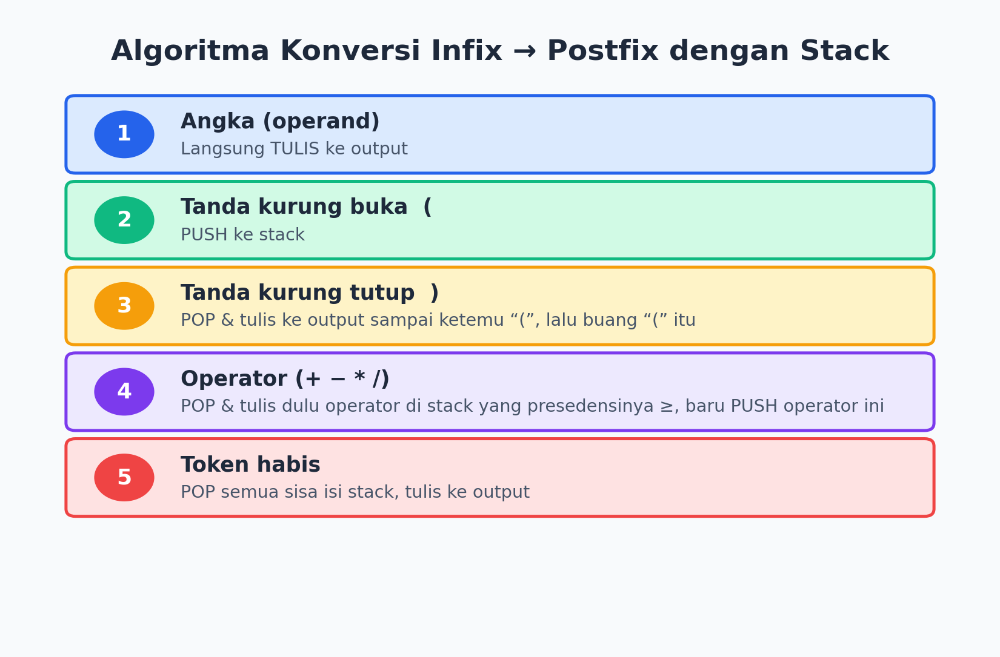
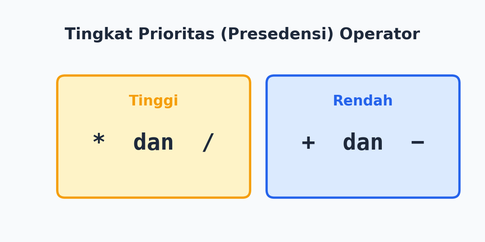
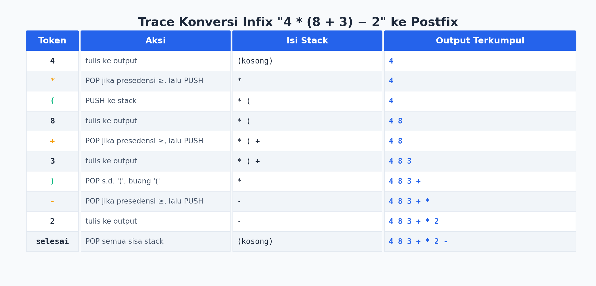
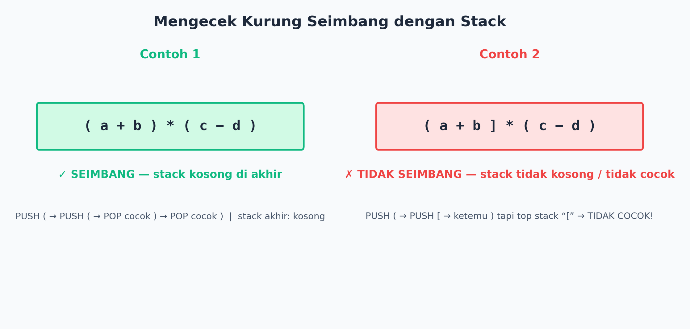
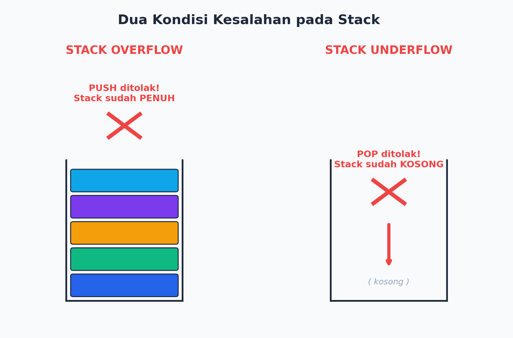
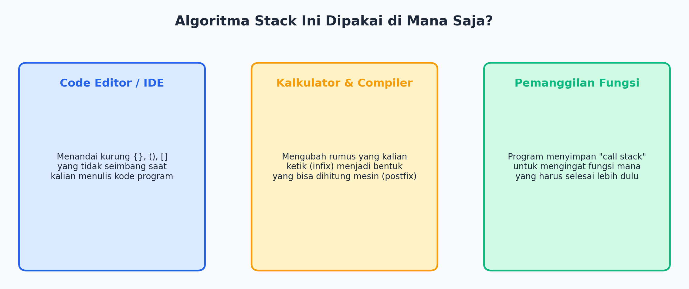

01Flashback: Pertemuan Sebelumnya 🔁
Sebelum lanjut, yuk ingat lagi apa yang sudah kalian pelajari.
- Stack = struktur data bertumpuk dengan prinsip LIFO (Last In First Out).
- PUSH = masukin data. POP = keluarin data — keduanya dari sisi atas (top).
- Kalian sudah bisa menghitung ekspresi postfix seperti 4 8 3 + * 2 − = 42 menggunakan stack.
Tapi... dari mana asalnya ekspresi postfix itu? Aslinya kita menulis 4 * (8 + 3) − 2 — siapa yang mengubahnya jadi bentuk postfix? Hari ini kita cari tahu algoritmanya sendiri!
02Misi: Tim Pengembang Aplikasi 📢
Sebuah tim sedang membuat aplikasi kalkulator. Kalkulator menerima ekspresi biasa (infix) dari pengguna, tapi mesinnya cuma bisa menghitung bentuk postfix. Aplikasi ini juga harus tahu kalau pengguna salah menulis kurung.
Tugas kalian: rancang cara kerja (algoritma) untuk (1) mengubah infix → postfix, dan (2) mengecek kurung seimbang — keduanya pakai stack!
035 Aturan Konversi Infix → Postfix

Kunci pentingnya: presedensi (prioritas) operator.

Ingat Baik-baik
Kalau di stack ada operator yang presedensinya lebih tinggi atau sama dengan operator baru yang dibaca, operator lama harus di-POP dulu ke output, baru operator baru di-PUSH.
04Yuk Kita Coba Bareng! 🔍
Ubah ekspresi 4 * (8 + 3) − 2 jadi postfix — ekspresi yang sama dari pertemuan lalu, sekarang kita cari cara dapatnya!

Ubahlah ekspresi berikut menjadi postfix, tunjukkan trace lengkapnya: (6 + 2) * (9 − 3)
Hasil Postfix: 6 2 + 9 3 − *
05Kurung Seimbang atau Enggak? 🔐
Pernah ngetik rumus panjang terus muncul error karena kurungnya kurang satu? Nah, aplikasi kayak kalkulator/code editor pakai stack buat ngecek itu!
Cara Ceknya
- Ketemu kurung buka ( { [ → PUSH ke stack.
- Ketemu kurung tutup ) } ] → kalau stack kosong, langsung SALAH. Kalau tidak, POP dan cek apakah pasangannya cocok.
- Setelah semua karakter dibaca: stack KOSONG → SEIMBANG. Masih ada isinya → TIDAK SEIMBANG.

Apakah ekspresi berikut kurungnya SEIMBANG? { [ a + b ] * ( c − d ) }
06Dua "Kecelakaan" pada Stack ⚠️

Program yang baik harus selalu mengecek dulu dua kondisi ini sebelum melakukan PUSH atau POP, supaya tidak error atau memberi jawaban yang salah.
07Dipakai di Mana Aja Sih? 🌐

08Rangkuman Level Lanjut 📝
- Konversi infix ke postfix: operand langsung ke output, kurung buka di-PUSH, kurung tutup memicu POP sampai ketemu kurung buka, operator dibandingkan presedensinya.
- Presedensi: * dan / lebih tinggi daripada + dan −.
- Kurung seimbang: PUSH saat buka, POP+cocokkan saat tutup, stack kosong di akhir = seimbang.
- Stack Overflow = PUSH saat penuh. Stack Underflow = POP saat kosong.
- Algoritma stack dipakai di code editor, kalkulator/compiler, dan pemanggilan fungsi program (call stack).
- 🙂 Mana yang lebih menantang: menghitung ekspresi postfix atau mengonversi infix ke postfix?
- 🤔 Pernahkah kalian mengalami error karena kurung tidak lengkap saat mengetik rumus? Sekarang kalian tahu kenapa itu bisa terdeteksi!
Sekarang kalian sudah selangkah lebih dekat memahami cara kerja aplikasi di balik layar. Siap-siap ketemu studi kasus seru di LKPD! 💻